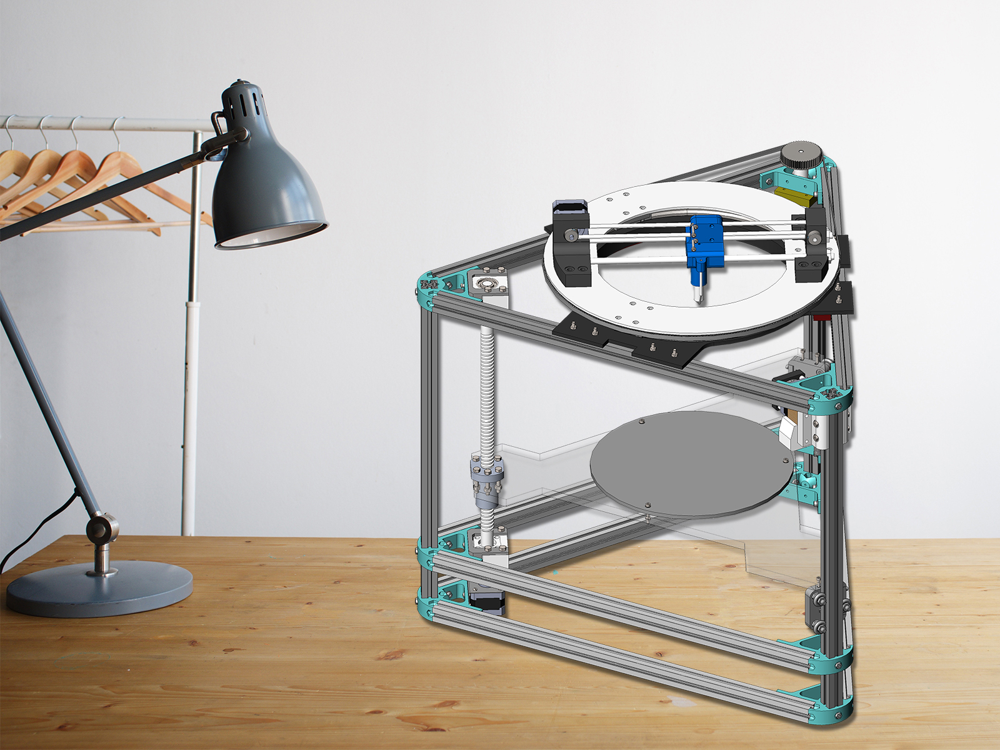

Desktop 3D Printer
Redesign
Introduction
RepRap is a kind of 3D printer characterized by fully open-source, freely assemble, with some degree of self-replication performance of hardware construction and control software.
Makerbot and Ultimaker, these two popular 3D printers are also originated from RepRap.
One can easily build his/her own replicator by following the models in RepRap wiki, but our goal is to design our own 3D printer, which conforms to the requirement of RepRap: self-replicable and easy to assemble.
The execution logic to achieve this goal is shown at the right.

Flow Chart
Skills Involved
- Solidworks
- Workspace Configuration
- Kinetic Analysis
- Thermal Analysis
- Optimization
- 3D Printing